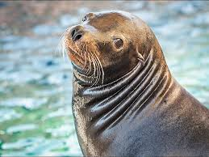
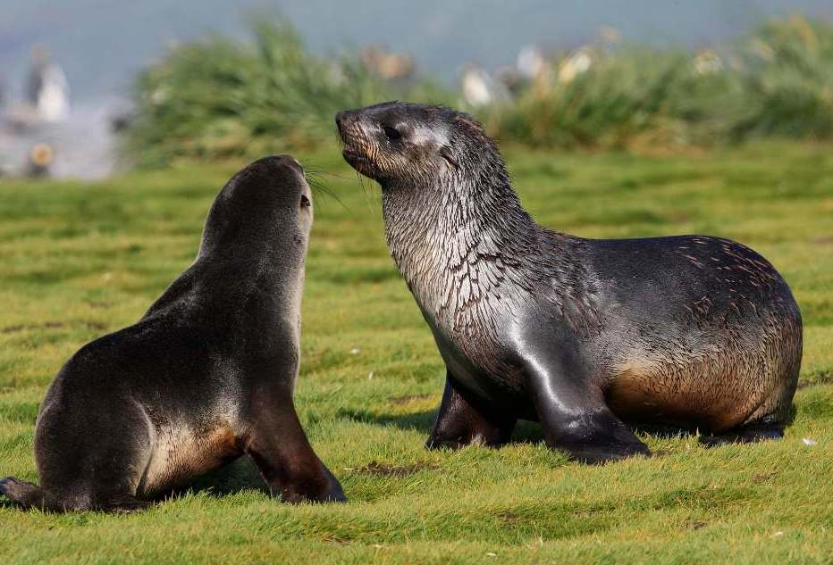
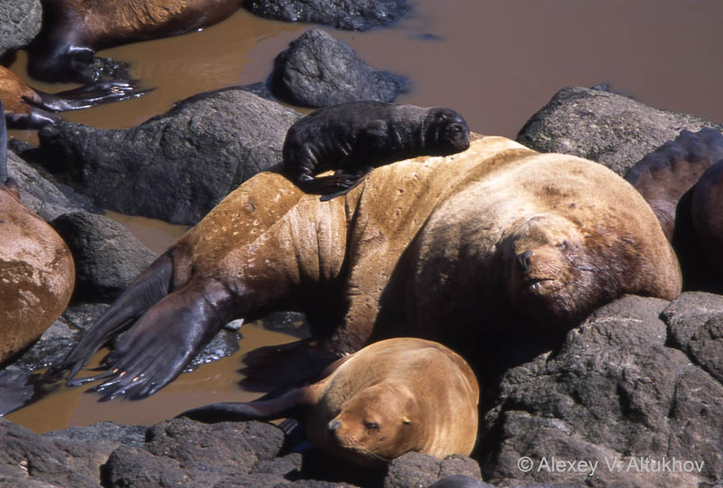
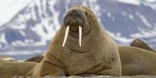

True Seals (Family Phocidae)
True seals are different from sea lions because they do not have ear flaps on the outside of their head. They also move differently on land, they kind of wiggle their body because their back flippers dont rotate forward. There are 19 species of true seals.
Here is a list of the most well-known true seals and some facts about each one:
-
Harbor Seal (Phoca vitulina)
- Lives along coastlines in the North Atlantic and North Pacific oceans
- Weighs between 55 and 170 kg
- Eats fish, squid, and crustaceans
- Conservation status is Least Concern which is good!
-
Leopard Seal (Hydrurga leptonyx)
- Lives in Antarctica and the sub-Antarctic waters
- Is a top predator and actually eats penguins and other seals
- Can weigh between 200 and 600 kg
- Has spots on its body which is why it is called a Leopard Seal
-
Weddell Seal (Leptonychotes weddellii)
- Lives the furthest south of any mammal that breeds in one place
- Can dive over 600 meters deep and hold breath for 80+ minutes
- Uses its teeth to keep holes open in the ice so it can breathe
- Weighs around 400 to 600 kg
-
Northern Elephant Seal (Mirounga angustirostris)
- The biggest seal in the Northern Hemisphere
- Males can weigh up to 2,300 kg which is really huge
- The males fight each other on the beach to be the dominant one
- Travels up to 21,000 km every year between feeding and breeding areas
-
Harp Seal (Pagophilus groenlandicus)
- Famous for having white fluffy pups that are born on ice
- The babies turn grey when they get older
- There are about 7.4 million of them so they are very common
- They know how to swim right after they are born
How Do True Seals Move?
On land, true seals move by flopping their body forward kind of like a caterpillar. This is because their back flippers cannot rotate to face forward. In the water they are very graceful though and they use their back flippers like a fish tail to swim very fast.
Eared Seals (Family Otariidae)
Eared seals are different from true seals because they have small ear flaps that you can see on the outside of their head. Their back flippers can also rotate forward which means they can kind of walk on all four limbs on land. This family includes sea lions and fur seals.

California Sea Lion
These are the seals you usually see doing tricks at aquariums! They are very smart and live on the Pacific coast of North America.

Antarctic Fur Seal
These seals almost went extinct because people hunted them for their fur. Now there are over 4 million of them because of protection laws.

Steller Sea Lion
This is the biggest eared seal. Males can weigh 1,100 kg! The western population is endangered which means there are not many left.
Walrus (Family Odobenidae)

A Pacific Walrus with its large tusks
The walrus is really unique because it is the only animal in its whole family (Odobenidae). You can recognize a walrus immediately because of its huge ivory tusks which can grow over 1 meter long! Both the males and females have tusks.
Walruses use their tusks to pull themselves out of the water onto ice, to show dominance over other walruses, and to fight off predators like polar bears.
Walruses eat clams and other shellfish from the ocean floor. They use their sensitive whiskers to find food in the dark and then they suck the meat out of the shells with their lips. This is really interesting!
They live in the Arctic Ocean and surrounding seas and usually hang out in big groups on the ice.
Comparison of All Three Pinniped Families
Here is a table showing the main differences between all three types of pinnipeds.
| Feature | True Seals | Eared Seals | Walrus |
|---|---|---|---|
| Do they have ear flaps? | No | Yes | No |
| Can back flippers rotate forward? | No | Yes | Yes |
| How do they swim? | With their back flippers | With their front flippers | With their back flippers |
| Do they have tusks? | No | No | Yes |
| How many species? | 19 species | 15 species | 1 species |
| Biggest species weight | 4,500 kg (Elephant Seal) | 1,100 kg (Steller Sea Lion) | 1,700 kg |